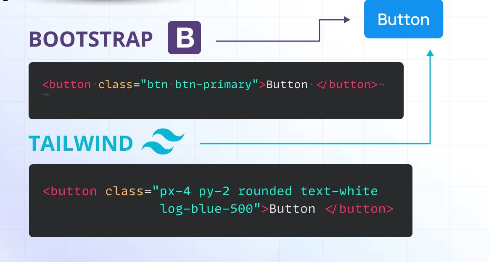

Tailwind CSS
Tailwind es un Framework "Utility-First" centrado en clases de bajo nivel para diseños personalizados.
Características Principales
Tailwind CSS se basa en la filosofía "Utility-First" (utilidades primero). En lugar de proveer componentes prediseñados (como Bootstrap), ofrece miles de clases utilitarias que se aplican directamente en el HTML. Esto permite un alto grado de personalización.
Ventajas
- Máxima Personalización: Permite construir cualquier diseño directamente con las utilidades, sin anular estilos preexistentes.
- CSS Optimizado: Utiliza herramientas como PurgeCSS para eliminar todas las clases no usadas, resultando en un archivo CSS de producción extremadamente pequeño.
- Flujo de Trabajo Rápido: No es necesario cambiar de archivo CSS para aplicar estilos, lo que agiliza el proceso de maquetación.
- Diseño Responsive Sencillo: Las utilidades permiten aplicar estilos por punto de ruptura de forma intuitiva.
Inconvenientes
- HTML "Abusivo" o Largo: El código HTML puede volverse muy verboso y difícil de leer debido a la gran cantidad de clases aplicadas a cada elemento.
- Curva de Aprendizaje: Requiere un buen conocimiento de CSS para usar las utilidades de manera efectiva.
- No Incluye Componentes: Obliga al desarrollador a construir botones, modales y barras de navegación desde cero usando las clases utilitarias.
- Necesidad de Compilador: Requiere el uso de herramientas de *build* (como PostCSS y Javascript) para funcionar correctamente y optimizar el CSS.
Componentes
- Clases de Utilidad de Bajo Nivel: Es la base de Tailwind. Clases como bg-blue-500 (fondo azul), p-4 (padding de 1rem) o flex se combinan directamente en el HTML para aplicar estilos.
- Utilidades Responsivas: Permite modificar los estilos según el punto de ruptura del dispositivo usando prefijos. Por ejemplo, md:text-left significa: "el texto estará centrado por defecto, pero a partir del tamaño mediano (md), estará alineado a la izquierda".
- Construcción de Componentes: Su funcionalidad clave es la composición. Un "botón" no es una clase (.btn-primary), sino la combinación de muchas utilidades: bg-purple-600 hover:bg-purple-700 font-bold py-2 px-4 rounded. Esto garantiza un control de estilo completo y único.
Instalacion
Tailwind se incluye con un script especial que genera las utilidades al cargar la página.
Estructura HTML para la inclusión:
<!-- Script CDN de Tailwind (SOLO PARA DESARROLLO) -->
<script src="https://cdn.tailwindcss.com"></script>